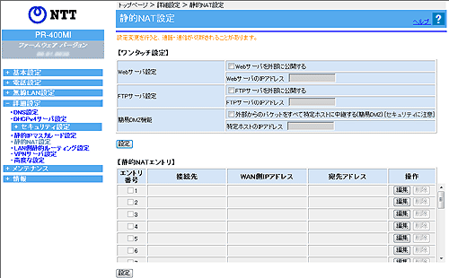

| 静的NAT設定では、パケット中継時にポート番号の変換を行わない場合に設定します。ここで登録したポート番号を持つパケットについては、IPアドレスの変換のみが行われます。 |
| ※「Web設定」画面に表示されているボタンについての説明は こちら |
|  |
 Webサーバ設定 Webサーバ設定 |
||
| LAN側に設置したWebサーバに外部からアクセスできるようにします。 Webサーバとして動作させる場合は、「Webサーバを外部に公開する」にチェックを入れ、Webサーバとして動作させる端末のIPアドレスを入力します。 |
||
| FTPサーバ設定 |
||
| LAN側に設置したFTPサーバに外部からアクセスできるようにします。 FTPサーバとして動作させる場合は、「FTPサーバを外部に公開する」にチェックを入れ、FTPサーバとして動作させる端末のIPアドレスを入力します。 |
||
| 簡易DMZ機能 |
||
| LAN側に設置した1台のIP端末に外部からのすべてのパケットを中継するようにします。 1台のIP端末で外部からのすべてのパケットを中継させる場合は、「外部からのパケットをすべて特定ホストに中継する（簡易DMZ）」にチェックを入れ、特定ホストのIPアドレスを入力します。 |
||
＜お知らせ＞
|
||
|
|
| 編集したいエントリの行末にある［編集］をクリックする 「エントリ編集」の画面が表示されます。 編集後、［設定］をクリックする |
| 削除したいエントリの行末にある［削除］をクリックする |
| ［静的NATエントリ編集］ | |
| 有効/無効（初期値：有効） |
|
| エントリの有効/無効を選択します。 | |
|
WAN側アドレス入力方法（初期値：WAN側IPアドレス指定） |
|
| WAN側IPアドレスの入力方法を選択します。 「接続先指定」、「WAN側IPアドレス指定」から選択します。 |
|
| 接続先 |
|
| （上記の「WAN側アドレス入力方法」で、「接続先」を選択した場合） 接続先を選択します。 「メインセッション」、「セッション2〜5」から選択します。 |
|
|
WAN側IPアドレス |
|
| （上記の「WAN側アドレス入力方法」で、「WAN側IPアドレス指定」を選択した場合） WAN側のIPアドレスを指定します。 |
|
|
宛先アドレス |
|
| LAN側端末のIPアドレスを指定します。 WAN側に公開したいアプリケーションが実行されている端末を指定します。 |
|